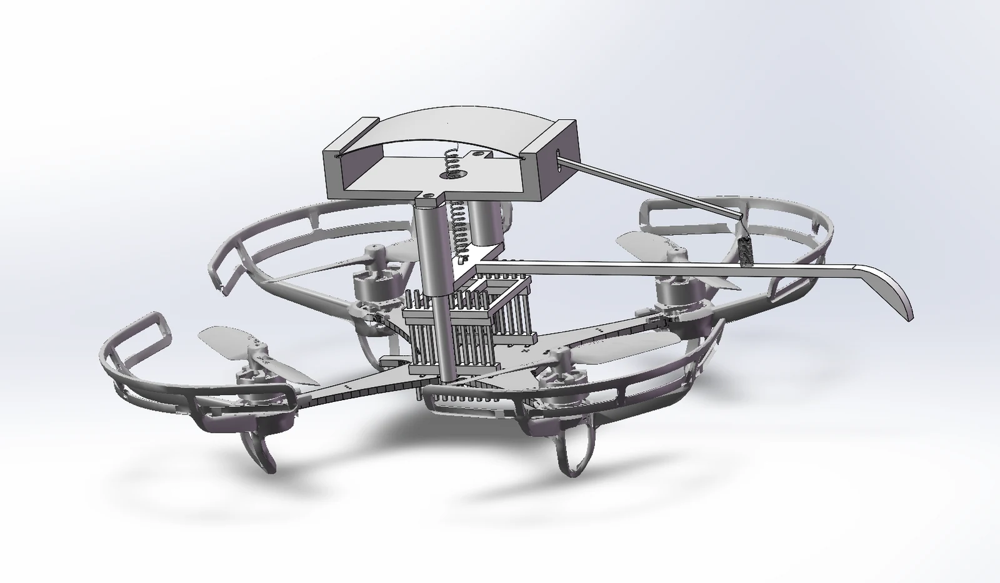
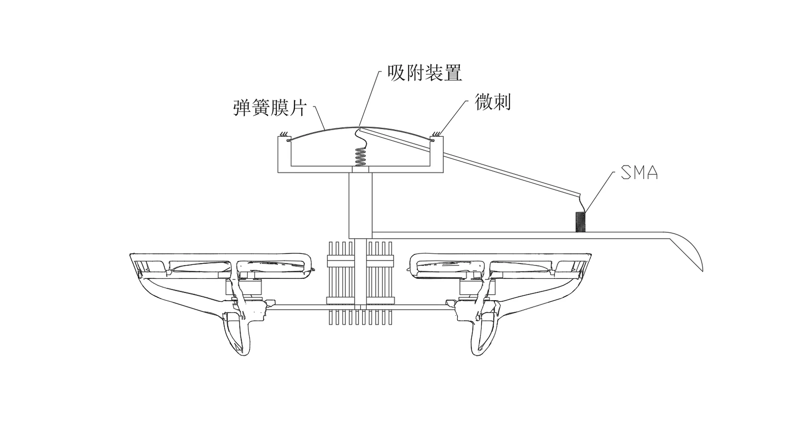

现在要回答的问题：同一个轻量化机构，能否在指定粗糙面与光滑面上分别实现可重复的接合、保持和可控离开？首次汇报后，近期工作聚焦多表面栖息；攀爬是否继续开展，将根据任务需要和机构能力重新评估。
研究面向指定粗糙面与光滑面的双模态栖息机构，采用 Crazyflie 2.1 Brushless 平台、预压缩薄板与 SMA 驱动。已有双稳态观察和 SMA 拉动翻转的初步记录；双向重复性、受载保持与整机动态栖息仍待验证。当前并行推进粗糙面夹具实验、光滑面方案筛选，以及飞控连接与遥测学习。
概念模型 / 把附着机构放到飞行平台上
以下是项目概念图与侧视布局，用来表达机构关系。它们对应方案构想，实际样机版本、载荷和飞行表现仍以下方实验记录为准。
{kind=link}

放大查看 ↗{kind=link}

放大查看 ↗01 / 哪些已经有记录，哪些还没有答案
以下状态依据截至 2026 年 9 月 9 日的项目交接与首次汇报后规划整理。原理演示、设计文件和系统实验分别记录，避免把局部可行性写成整机性能。
| 模块 | 已有记录 | 下一份需要的证据 |
|---|---|---|
| 双稳态薄板 | 打印夹具中观察到预压缩薄板双稳态；汇报采用 0.2 mm 锰钢薄板。 | 带载稳定范围与力—位移曲线。 |
| SMA 触发 | 近期汇报记录 SMA 已能拉动薄板翻转。 | 两个方向分别记录成功次数、输入参数、冷却和失败原因。 |
| 夹具与布局 | 有多版 CAD / 3MF 与整机布局，模型目录包含 7.1。 | 确认实际样机版本、质量、重心与加载变形；设计版本不等于实测次数。 |
| 粗糙面 | 拟用鱼钩原型建立机械互锁。 | 撤除人工预载后的挂附、偏心承载、保持与解钩记录。 |
| 光滑面 | V1 有按压后立即回弹的失败记录，后续有吸盘及模具设计。 | 通过对照定位回弹、密封与加载问题，测量保持和释放。 |
| 整机与飞控 | 处于设计与原理验证阶段，计划打通开发和遥测链路。 | 连接日志、飞行基线，以及接近—附着—离开的完整实验。 |
02 / 双模态与双稳态，各自解决什么
粗糙面 · 机械互锁
鱼钩 / 微刺是首轮候选接触件。先固定在粗糙模式测挂附，区分“挂不上”和“翻转不到位”两类问题。
光滑面 · 附着件筛选
吸盘或黏附装置仍是待比较的方案。已有模具不意味着保持通过，吸盘破封和干黏附剥离也需要分别设计。
预压缩薄板负责选择工作接触件，并让非工作件退让；SMA 负责触发构型变化。希望切换后由结构保持构型、由接触件承担载荷。这个目标仍需带载实验支持，不能据此宣称整机已经实现零功耗栖息。
03 / 下一步：每一次迭代都对应一个实验问题
- 先建立记录：固定样机编号、壁面样件、加载位置和成功定义，保存完整成功与失败记录。
- 粗糙面与切换分开测：先检查挂附、偏心承载和可控释放，再加入 SMA 双向循环。
- 光滑面做对照：在相同表面、预载和加载方式下比较自制吸盘与可获得的对照件，定位失效来源。
- 打通飞控基础链：学习连接、参数、遥测与日志；理解传感器、状态估计、控制器和电机输出之间的关系。
- 通过台架再推进整机：首轮起飞前选定模式；载荷转移、保持和离墙逐步验证，空中切换另设条件。
这是拟验证的流程，不是已经运行的控制程序。接触到墙面不等于附着成功；保持时若仍依赖旋翼推力，应记录为辅助栖息。
04 / 当前开放问题
- 薄板在承担偏心载荷时，会不会误翻转？
- 两个方向的 SMA 触发能否分别重复到位，并保留足够冷却时间？
- 完整机构的非工作接触件在加载变形后是否仍能避让？
- 光滑面失败来自样件、密封、回弹还是加载方式？
- 哪些可观测信号足以支持从接触转入承载？
继续阅读
Crazyflie 飞控学习路线与官方链接 → · 浏览 13 篇公开论文笔记 → · 从论文到实验的记录方法 →
整理依据：2026-09-09 项目交接文档、首次汇报后工作规划。此页为公开摘要，不包含私人日记原文；未对原始实验视频进行独立复核。